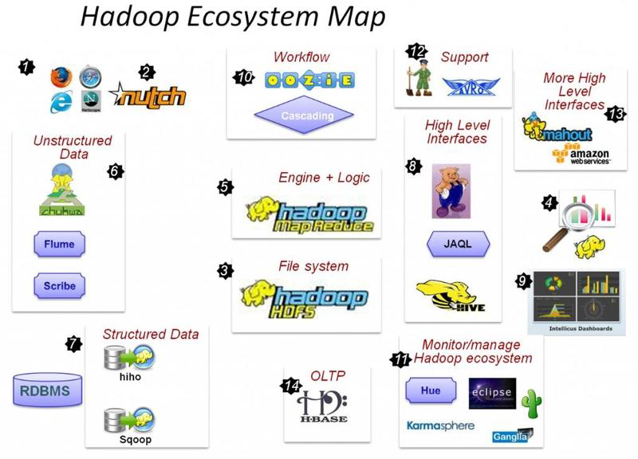

[Hadoop3.x] 深入了解Hadoop 3.x

文章目录
关于Hadoop
起源

Hadoop起源于Nutch，其设计目标是构建一个大型的全网搜索引擎，包括网页抓取、索引、查询等功能。Nutch的开发人员完成了相应的开源实现HDFS和MAPREDUCE，并从Nutch中剥离成为独立项目HADOOP，到2008年1月，HADOOP成为Apache顶级项目，迎来了它的快速发展期。截止2019年8月Hadoop版本已经进化到3.2。
什么是Hadoop
- 狭义上： 它是Apache的一个顶级项目：Apahce Hadoop
- 广义上: 是指以Hadoop为核心的整个大数据存储和计算软件生态体系，通常我们说的Hadoop指的就是这个，而不仅仅是Apahce Hadoop软件本身。
发行版本
目前Hadoop发行版非常多，有Intel发行版，华为发行版、Cloudera发行版（CDH）、Hortonworks版本等，所有这些发行版均是基于Apache Hadoop衍生出来的，之所以有这么多的版本，是由于Apache Hadoop的开源协议决定的：任何人可以对其进行修改，并作为开源或商业产品发布/销售。
目前，主要的发行版本有三个，但商业主要用的版本多为CDH版。
- Apache（最原始的版本，所有发行版均基于这个版本进行改进）
- Cloudera版本（Cloudera’s Distribution Including Apache Hadoop，简称CDH）
- Hortonworks版本(Hortonworks Data Platform，简称“HDP”）
Hadoop 核心组件以及生态圈
Hadoop核心组件最主要有两个，分别是HDFS和MapReduce，其作用是：
- HDFS是基于分布式存储文件系统，主要用来存储数据
- MapReduce是基于并行处理数据的一种分布式计算框架。
注：Hadoop1.x中MapReduce同时负责计算和资源调度，但在Hadoop2.x后，由Yarn专门负责计算资源的管理和调度，而MapReduce只负责计算。
其他组件作用如下：
- Hive：基于Hadoop的类SQL数据仓库工具
- Hbase：基于Hadoop的列式分布式NoSQL数据库
- ZooKeeper：分布式协调服务组件
- Mahout：基于MapReduce/Flink/Spark等分布式运算框架的机器学习算法库
- Oozie/Azkaban：工作流调度引擎
- Sqoop：数据迁入迁出工具
- Flume：日志采集工具

Hadoop 误区与优缺点
Hadoop与其组件的关系
Hadoop是面向大数据存储和计算的开源软件平台，它是以由软件组件集合构成的平台，并不是一个软件。其组件有很多，每个组件负责着不同的功能。如HDFS组件负责大数据的存储，MapReduce负责大数据的计算。
Hadoop不只是三副本
HDFS是Hadoop中负责大数据的存储方案，HDFS是分布式的数据存储解决方案，每份数据默认副本数量为3，但也可以是1，是2，是其它数字，而且Hadoop3.X已经开始支持Erasure Code（纠删码）的数据安全存储方案。所以在表达时区分开Hadoop和HDFS，因为它的内涵和外延是不一样的。
Hadoop必须是三个节点起配吗
答案是否定的。
在安装配置Apache Hadoop软件平台时,运行方式有三种模式可以选：
单机模式（Stand alone），即单节点集群(Single Node Cluster)模式,通常用于debug或者练习实验用。
伪分布式(Pseudo-Distributed)，即在一台机器上模拟多节点集群模式，在硬件资源有限的情况下，配置全分布式的集群模式。其配置和全分布式基本一样。
全分布式(Fully-Distributed)，完全的集群模式，根据需求做平台规划，然后选择节点性能配置以满足业务需求。
切记：不要在选择技术方案时候，而忘记了为何种业务需求或者应用场景而选择技术方案，因为Hadoop开发设计之初是有适用场景的。
HDFS的优缺点
HDFS（Hadoop Distributed File System）是一个分布式文件系统，用于存储文件，通过目录树定位文件；它是由很多服务器联合起来实现功能，集群中的服务器各有各的角色。如DataNode、NameNode.
优点
高容错性
- 数据自动保存为多个副本，它通过增加副本的形式，提高容错性。
- 某一个副本丢失后（数据节点损坏后），它可以自动恢复。
适合大数据处理
- 数据规模：能够处理数据规模达到GB/TB,甚至PB级别的数据；
文件规模：能够处理百万规模以上的文件数量，数量相当之大；
利用廉价机器搭建集群，通过多副本提高可靠性
缺点
- 不适合低延时的数据访问，例如毫秒级的存储数据。
- 无法高效的对大量小文件进行存储。
（1）如果存储大量小文件的话，它会占用NameNode大量的内存来存储文件目录和块信息，这样做是不可以的，因为NameNode的内存总是有限的。
因为开机后，集群里所有的数据目录和块信息都会加载进入NameNode节点的内存里(2)小文件存储的寻址时间会超过目标文件的读取时间，这就违反了HDFS的设计初衷和目标。
- 不支持并发写入和文件随机修改。
(1)一个文件只能有一个句柄写，不允许多个线程同时写
(2)文件操作仅支持数据追加（即Append方法），不支持文件的随机修改。
HDFS的适用场景
适合一次写入、多次读出的场景，且不支持文件的修改。
适合做数据分析，并不适合来做网盘应用。
数据块(Block)大小设置依据
原则：目标数据的寻址时间应该是目标数据读取时间的1%。
在Hadoop1.X中，block大小默认是64M，自Hadoop2.x开始默认大小为128M。具体设置多少需要根据所存储数据的特性来计算而得。
Hadoop2.x和3.x 区别与联系
相对于之前主要生产发布版本Hadoop 2，Apache Hadoop 3整合许多重要的增强功能。 Hadoop 3提供了稳定性和高质量的API，可以用于实际的产品开发。下面简要介绍一下Hadoop3的主要变化。
1.最低Java版本要求从Java7变为Java8
所有Hadoop的jar都是基于Java 8运行是版本进行编译执行的，仍在使用Java 7或更低Java版本的用户需要升级到Java 8。
2.HDFS支持纠删码（erasure coding）
纠删码（erasure coding）是一种比副本存储更节省存储空间的数据持久化存储方法。比如Reed-Solomon(10,4)标准编码技术只需要1.4倍的空间开销，而标准的HDFS副本技术则需要3倍的空间开销。由于纠删码额外开销主要在于重建和远程读写，它通常用来存储不经常使用的数据（冷数据）。另外，在使用这个新特性时，用户还需要考虑网络和CPU开销。
3.重写Shell脚本
Hadoop的shell脚本被重写，修补了许多长期存在的bug，并增加了一些新的特性。
4.覆盖客户端的jar（Shaded client jars）
在2.x版本中，hadoop-client Maven artifact配置将会拉取hadoop的传递依赖到hadoop应用程序的环境变量，这回带来传递依赖的版本和应用程序的版本相冲突的问题。
HADOOP-11804 添加新 hadoop-client-api和hadoop-client-runtime artifcat，将hadoop的依赖隔离在一个单一Jar包中，也就避免hadoop依赖渗透到应用程序的类路径中。
5.支持Opportunistic Containers和Distributed Scheduling
ExecutionType概念被引入，这样一来，应用能够通过Opportunistic的一个执行类型来请求容器。即使在调度时，没有可用的资源，这种类型的容器也会分发给NM中执行程序。在这种情况下，容器将被放入NM的队列中，等待可用资源，以便执行。Opportunistic container优先级要比默认Guaranteedcontainer低，在需要的情况下，其资源会被抢占，以便Guaranteed container使用。这样就需要提高集群的使用率。
Opportunistic container默认被中央RM分配，但是，目前已经增加分布式调度器的支持，该分布式调度器做为AMRProtocol解析器来实现。
6.MapReduce任务级本地优化
MapReduce添加了映射输出收集器的本地化实现的支持。对于密集型的洗牌操作（shuffle-intensive）jobs，可以带来30%的性能提升。
7.支持多余2个以上的NameNode
针对HDFS NameNode的高可用性，最初实现方式是提供一个活跃的（active）NameNode和一个备用的（Standby）NameNode。通过对3个JournalNode的法定数量的复制编辑，使得这种架构能够对系统中任何一个节点的故障进行容错。
该功能能够通过运行更多备用NameNode来提供更高的容错性，满足一些部署的需求。比如，通过配置3个NameNode和5个JournalNode，集群能够实现两个节点故障的容错。
8.修改了多重服务的默认端口
在之前的Hadoop版本中，多重Hadoop服务的默认端口在Linux临时端口范围内容（32768-61000），这就意味着，在启动过程中，一些服务器由于端口冲突会启动失败。这些冲突端口已经从临时端口范围移除，NameNode、Secondary NameNode、DataNode和KMS会受到影响。我们的文档已经做了相应的修改，可以通过阅读发布说明 HDFS-9427和HADOOP-12811详细了解所有被修改的端口。
9.提供文件系统连接器（filesystem connnector）,支持Microsoft Azure Data Lake和Aliyun对象存储系统
Hadoop支持和Microsoft Azure Data Lake和Aliyun对象存储系统集成，并将其作为Hadoop兼容的文件系统。
10.数据节点内置平衡器（Intra-datanode balancer）
在单一DataNode管理多个磁盘情况下，在执行普通的写操作时，每个磁盘用量比较平均。但是，当添加或者更换磁盘时，将会导致一个DataNode磁盘用量的严重不均衡。由于目前HDFS均衡器关注点在于DataNode之间（inter-），而不是intra-，所以不能处理这种不均衡情况。
在hadoop3 中，通过DataNode内部均衡功能已经可以处理上述情况，可以通过hdfs diskbalancer ClI来调用。
11.重写了守护进程和任务的堆管理机制
针对Hadoop守护进程和MapReduce任务的堆管理机制，Hadoop3 做了一系列的修改。
HADOOP-10950 引入配置守护进程堆大小的新方法。特别地，HADOOP_HEAPSIZE配置方式已经被弃用，可以根据主机的内存大小进行自动调整。
MAPREDUCE-5785 简化了MAP的配置，减少了任务堆的大小，所以不需要再任务配置和Java可选项中明确指出需要的堆大小。已经明确指出堆大小的现有配置不会受到该改变的影响。
12.S3Gurad:为S3A文件系统客户端提供一致性和元数据缓存
HADOOP-13345 为亚马逊S3存储的S3A客户端提供了可选特性：能够使用DynamoDB表作为文件和目录元数据的快速、一致性存储。
13.HDFS的基于路由器互联（HDFS Router-Based Federation）
HDFS Router-Based Federation添加了一个RPC路由层，为多个HDFS命名空间提供了一个联合视图。这和现有的ViewFs、HDFS Federation功能类似，区别在于通过服务端管理表加载，而不是原来的客户端管理。从而简化了现存HDFS客户端接入federated cluster的操作。
14.基于API配置的Capacity Scheduler queue configuration
OrgQueue扩展了capacity scheduler，提供了一种编程方法，该方法提供了一个REST API来修改配置，用户可以通过远程调用来修改队列配置。这样一来，队列的administer_queue ACL的管理员就可以实现自动化的队列配置管理。
15.YARN资源类型
Yarn资源模型已经被一般化，可以支持用户自定义的可计算资源类型，而不仅仅是CPU和内存。比如，集群管理员可以定义像GPU数量，软件序列号、本地连接的存储的资源。然后，Yarn任务能够在这些可用资源上进行调度。
### 16.YARN时间线服务 v.2(YARN Timeline Service v.2)
YARN Timeline Service v.2用来应对两个主要挑战：（1）提高时间线服务的可扩展性、可靠性，（2）通过引入流(flow)和聚合(aggregation)来增强可用性。为了替代Timeline Service v.1.x，YARN Timeline Service v.2 alpha 2被提出来，这样用户和开发者就可以进行测试，并提供反馈和建议，不过YARN Timeline Service v.2还只能用在测试容器中。
文章作者 任海军
上次更新 2019-07-03
许可协议 MIT